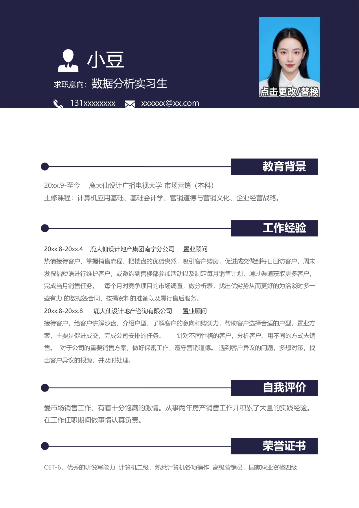

小豆
求职意向：
数据分析实习生
131xxxxxxxx
xxxxxx@xx.com
20xx.9-至今
鹿大仙设计广播电视大学市场营销（本科）
主修课程：计算机应用基础、基础会计学、营销道德与营销文化、企业经营战略。
20xx.8-20xx.4 鹿大仙设计地产集团南宁分公司 置业顾问
热情接待客户、掌握销售流程，把楼盘的优势突然，吸引客户购房，促进成交做到每日回访客户，周末
发祝福短语进行维护客户，或邀约到售楼部参加活动以及制定每月销售计划，通过渠道获取更多客户，
完成当月销售任务。 每个月对竞争项目的市场调查，做分析表，找出优劣势从而更好的为洽谈时多一
些有力 的数据签合同、按揭资料的准备以及履行售后服务。
20xx.8-20xx.8 鹿大仙设计地产咨询有限公司 置业顾问
接待客户，给客户讲解沙盘，介绍户型，了解客户的意向和购买力，帮助客户选择合适的户型，置业方
案，主要是促进成交，完成公司安排的任务。 针对不同性格的客户，分析客户、用不同的方式去销
售。 对于公司的重要销售方案，做好保密工作，遵守营销道德。 遇到客户异议的问题，多想对策，找
出客户异议的根源，并及时处理。
爱市场销售工作，有着十分饱满的激情。从事两年房产销售工作并积累了大量的实践经验。
在工作任职期间做事情认真负责。
CET-6，优秀的听说写能力 计算机二级，熟悉计算机各项操作 高级营销员，国家职业资格四级
教育背景
工作经验
自我评价
荣誉证书